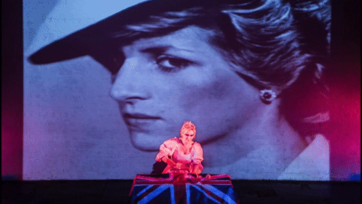
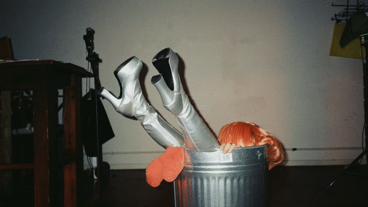

artistic portfolio
a. composer + sound designer PLEWDS, Kathrine Payne (2023)
(theatre/live art, Camden People's Theatre, Summerhall Edinburgh)
a. composer + sound designer Poster Boy, Louisa Doyle (2023)
(theatre/live art, Camden People's Theatre)
b. chorus performer Dead Cat Bounce, Waste Paper Opera (2023)
(live radio performance, Resonance Xtra)
c. composer + sound designer MOONFACE, Meg Hodgson (2022)
(theatre/live art, The Grant Museum, UCL Culture, Femme Fest, Camden People's Theatre)
d. ensemble performer CRYCRYKILLKILL, Louise Orwin (2022)
(theatre/live art, Brighton Fringe)

e. sound designer UTOPIAN (t&c's apply), Symone (2022)
(theatre/live art, Tramway Glasgow, The Lowry, Jackson's Lane, Homotopia Festival)

f. solo performer Big Bird, Livvy Lynch (2020-21)
(multimedia/live art, The Palace Collective Poland, Sonic Bodies Vogue Fabrics, The Steamships)

g. ensemble performer Diana is Dead, FK Alexander (2019)
(performance/live art, The Yard Theatre)

h. actor I'd Rather Not, Toby Paul Jones (2018)
(short film, European Film College Aarhus)

i. performer Ketones, Model Man (2018)
(music video, Mahogany Recordings)

j. solo performer Within/Without, Livvy Lynch (2017-18)
(multimedia/live sound, Steakhouse Live, Hundred Years Gallery,
Low Stakes: A Micro Festival, Sissy Palace)

k. vocalist Dojo collective (2015-17)
(Groundation & The Resonators UK support: Komedia, Concorde 2, The Garage,
Koko London, Brixton Jamm, Jazz Cafe, OPEN Norwich)